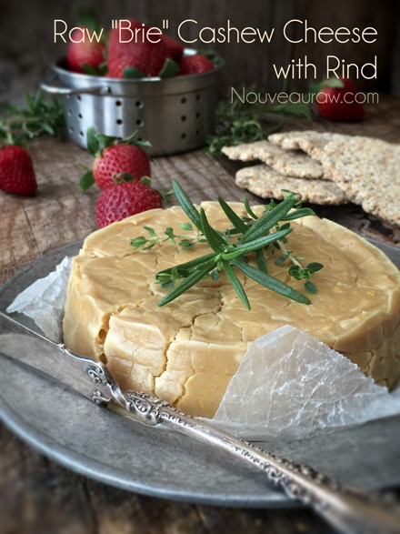
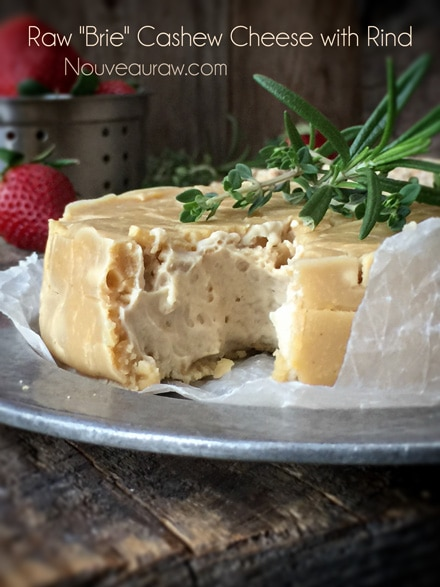
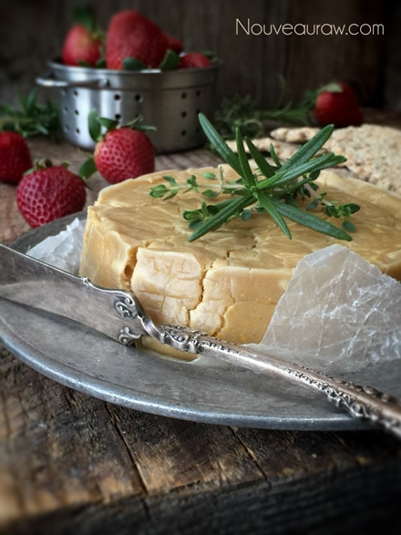

Brie Cashew Cheese with Rind

If you are seeking raw, vegan, cultured alternatives for cheese, I encourage you to try your hand at this amazing recipe. I think you might be pleasantly surprised as to how easy and tasty it can be. I promise I am not telling you…
Dairy-Tales!
There are just a few key ingredients and elements that can turn a basic nut into a “cheese”! Stay with me–I know for many of you this may sound bizarre, but let your adventurous side shine through. I am right beside you in this crazy quest.
To help you better understand how we can make “cheese” from nuts, I will go over the key ingredients and talk about their role in this recipe.
Cashews
- Nuts are a healthy fat that coats the tongue, which carries flavors evenly over the taste buds.
- They also play the leading role as the base of this “cheese,” giving it that creamy texture.
Probiotics
- Probiotics bring in healthy bacteria that are great for your digestive system, and they are the magical ingredient that gives the “cheese” that fermented flavor. I have captivated you already, haven’t I?
- Probiotics come in powder form and capsule form. I have used only the capsule version. They easily pull apart, and I just pour the powder into a teaspoon.
- Once the recipe is mixed together, you leave the “cheese” to culture on your countertop for 24-48 hours. The longer it cultures, the stronger the “cheese” flavor will come through. Once you place the cheese in the fridge, the culturing process slows down tremendously.
Nutritional Yeast
- Along with the culturing step, I added nutritional yeast to the recipe, which has a cheesy flavor. It is commonly used in vegan recipes.
- Nutritional yeast naturally supplies fiber and protein (a complete, bioavailable, and vegan source) with 18 amino acids and a multitude of different minerals (including iron, molybdenum, selenium, and zinc).
- Not all nutritional yeast brands are equal in quality, so always double-check your resources. I provided a link down below to the one I use.
Herbs (so many options)
- I didn’t mix any herbs into this recipe, because I wanted plain cheese. But you can add your favorite herbs and spices to fit any occasion or craving.
Dehydration
- This is the crucial step in creating a rind. The drying process takes about 24 hours. Placing the cheese in the dehydrator it creates a rind on the outside of the cheese. You can see the color difference between the outside and the inside. The rind is quite thick on mine.
6″ cheese disc
Preparation:
- First and foremost, make sure all of the utensils and pieces of equipment you use for culturing are sterilized to avoid growing bad bacteria.
- If at any time you see fuzzy, black, or pink mold, the cheese will need to be tossed.
- Place the cashews in a bowl, adding twice the amount of water. During the soaking process, the cashews will absorb water and swell.
- After soaking the cashews, drain and discard the soak water. The process has a twofold purpose:
- To soften the cashews, so they blend perfectly smooth.
- To reduce phytic acid, which can be rough on your digestion.
- In a high-powered blender, combine the cashews, water, and probiotics. Blend until the mixture is velvety smooth.
- This can take 2-4 minutes, depending on your machine.
- Test occasionally by rubbing the mixture between your forefinger and thumb. If you feel any grit, continue blending.
- Be careful that you don’t overheat the mixture. If the carafe is feeling warm to the touch, let the mixture rest to cool before proceeding.
- If you have a low-powered blender, I would suggest blending the water and the cashews first. Once smooth, then add the probiotic. We don’t want to kill the good bacteria by overheating it.
- Prepare a stainless steel mesh strainer by placing it in a large bowl. Then line it with a double layer of cheesecloth.
- Pour the “cheese” mixture into the center of the cloth.
- Gather all the edges of the fabric together, twist tight, and fold it over onto itself.
- Lay a small plate on top of the bundle, followed by a weight.
- Use a mason jar filled with water, beans, flour, or whatever.
- You want the weight to be heavy enough to put pressure on the “cheese” but not so much that it forces the cheese to leak through the cheesecloth.
- The bowl is under the strainer to catch the “whey” that will slowly drip out. It won’t be much, just enough to leave a mess if unattended.
- Cover the bowl with a towel and set the mixture aside on the countertop for 24-48 hours to culture.
- The temperature of the house will affect the culturing time. The warmer the house, the quicker it will start to culture, so keep an eye on it.
- It will develop a pretty strong cheese-like odor during this time.
- After it has cultured, scoop the mixture into a clean bowl.
- Add the salt and nutritional yeast. Mix well.
- Transfer to a ring mold or the ring of a Springform pan, lining the base with plastic.
- Place the mold in the freezer for several hours, so it sets up nice and firm.
- Carefully remove the cheese from the mold, place it on a non-stick sheet, and slide into the dehydrator.
- Dry for 1 hour at 145 degrees (F). Click (here) to read why.
- Reduce the heat to 115 degrees (F) and continue to dry for up to 24 hours.
- Halfway through the dry time, remove the teflex sheet and place the cheese on the mesh sheet for the remainder of the dry time. This will speed up the process and allow air to flow around it.
- This process will cause a rind to develop around the edges.
- Once done, enjoy! There should be a nice rind on the outside and creamy cheese on the inside.
- Store in an airtight container in the fridge for approximately 7 days. The cheese will continue to culture, but once chilled, it slows down considerably.


© AmieSue.com